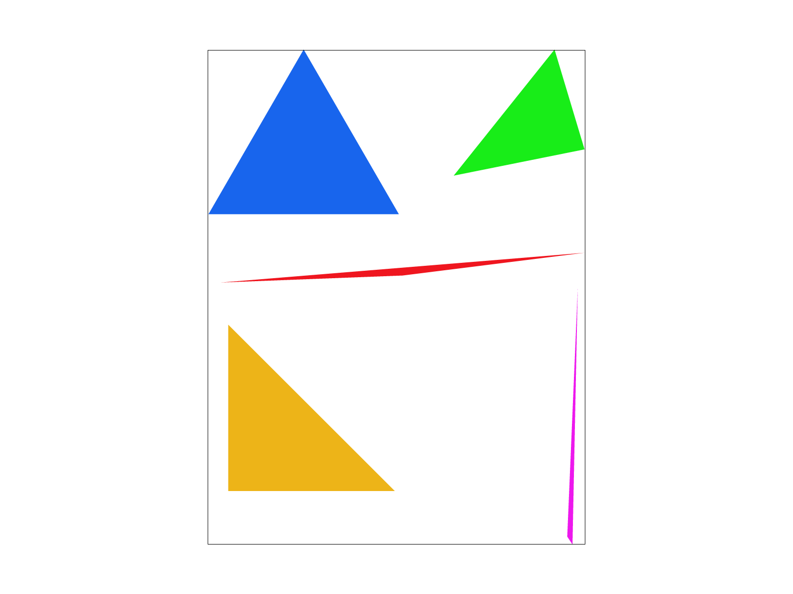
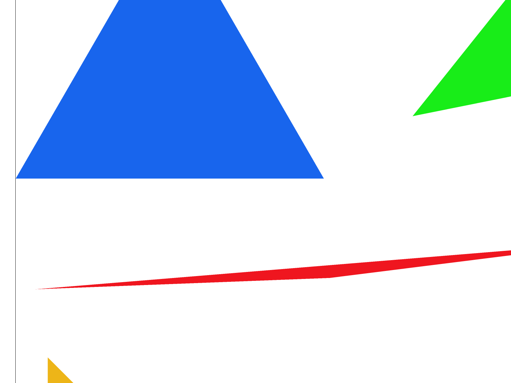
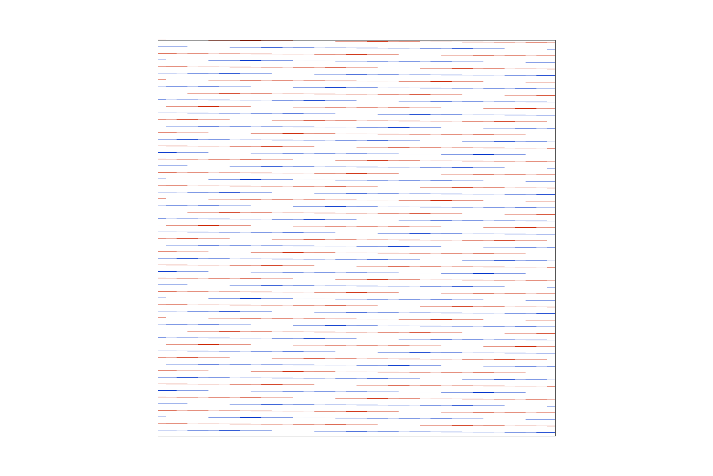
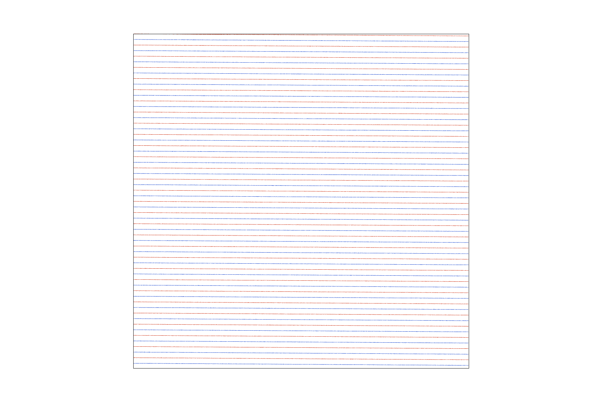
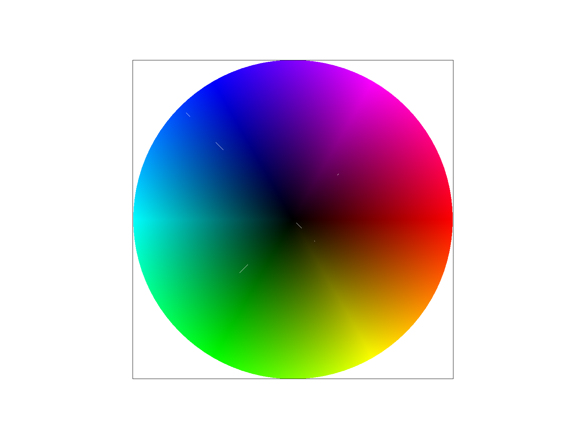
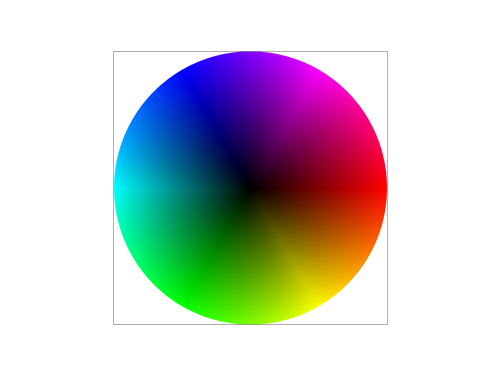
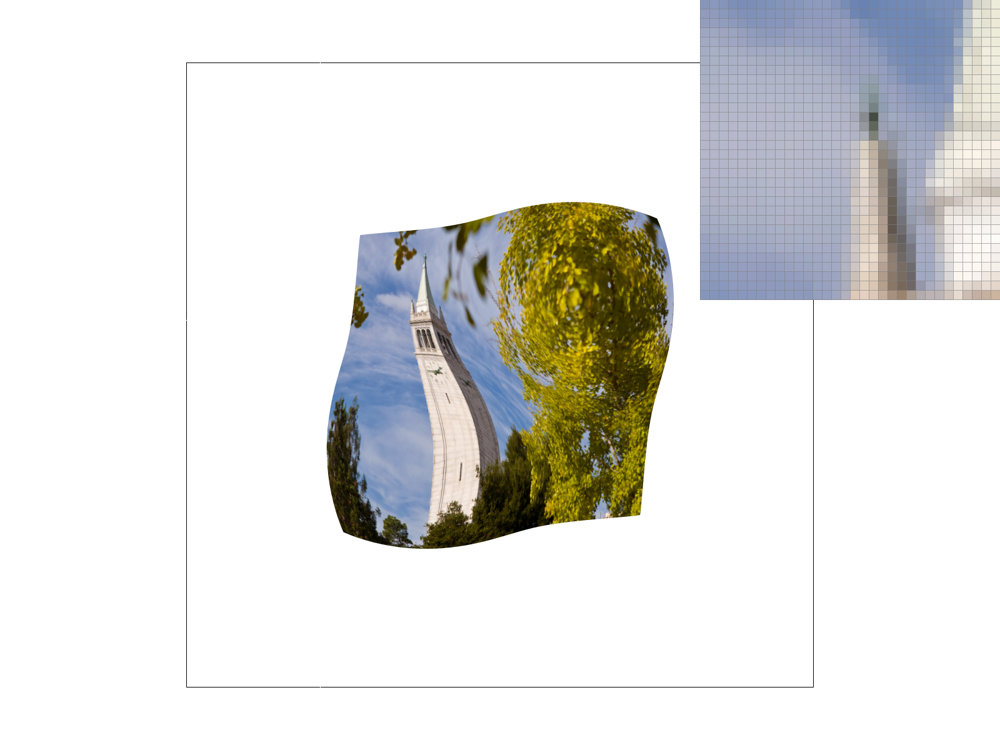
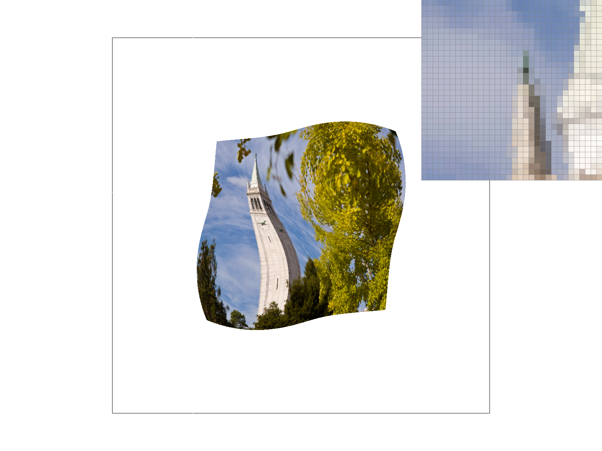
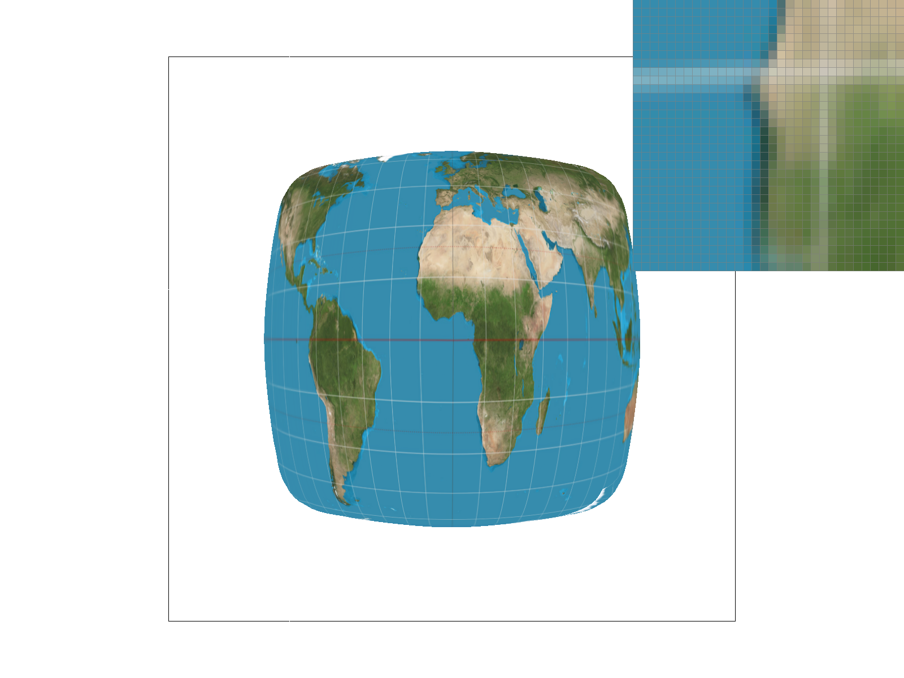
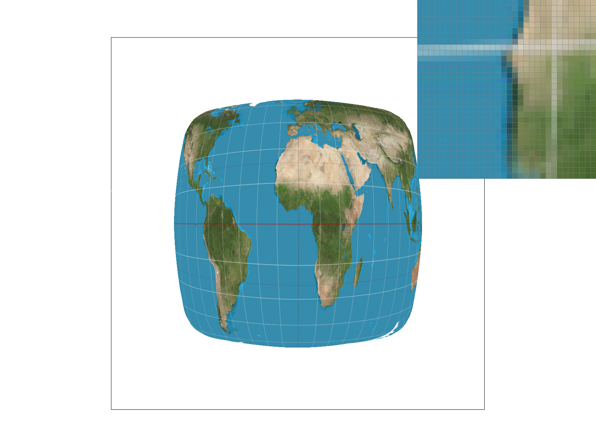

Overview
This is a rasterizer built from scratch. I started with drawing basic triangles, then added features step by step: supersampling for antialiasing, 2D transformations, color interpolation, texture mapping (nearest and bilinear), and mipmap-based texture sampling. I also included full trilinear and anisotropic filtering. As a bonus, I optimized edge functions for speed, added jittered supersampling, viewport rotation, and reused mipmaps for anisotropic filtering.
Each technique helps reduce aliasing in a different way: supersampling smooths out coverage in screen space, bilinear filtering blends texture samples, and mipmaps help when shrinking textures. Using these together shows how they complement each other—no single method solves all aliasing problems.
Drawing Single-Color Triangles
Algorithm
Given three vertices, we find which pixels to fill using three steps:
- Bounding box - compute the min/max of the vertices' x and y coordinates, clamped to the framebuffer, to get the smallest rectangle that contains the triangle.
- Sample each pixel center - for every pixel \((x, y)\) in the box, test the point \((x + 0.5,\ y + 0.5)\).
- Edge function test - evaluate three edge functions, one per edge: \[ L_0 = (x_1 - x_0)(p_y - y_0) - (y_1 - y_0)(p_x - x_0) \] \[ L_1 = (x_2 - x_1)(p_y - y_1) - (y_2 - y_1)(p_x - x_1) \] \[ L_2 = (x_0 - x_2)(p_y - y_2) - (y_0 - y_2)(p_x - x_2) \] If all three are \(\geq 0\) (or all \(\leq 0\), to handle both winding orders), the pixel is inside and gets filled.
This is no worse than checking every sample in the bounding box, visiting each pixel in the box exactly once with \(O(1)\) work per pixel.
Optimizations [bonus]
All timings use std::chrono::high_resolution_clock, sample rate = 1. Median across steady-state frames is reported.
v0 - Incremental Edge Functions + Early Exit
The basic version recomputes all three edge functions from scratch per pixel. Since \(L\) is linear, moving one pixel in either direction changes it by a constant step:
\[ \Delta L_x = -(b_y - a_y) \qquad \Delta L_y = (b_x - a_x) \]The edge functions are evaluated once at the top-left sample and stepped with additions from there, using 3 additions per pixel instead of ~12 multiply-subtracts.
Additional changes: zero-area triangles are rejected immediately; winding is checked once up front so the inner loop does 3 comparisons instead of 6; since triangles are convex, each scanline has one contiguous span so the loop breaks as soon as it exits; and fill_pixel is inlined to a direct buffer write.
v1 - Analytical Span Start + Pointer Arithmetic
- CCW normalization - CW triangles have all three edge functions negated once. The inner test is then always "all \(\geq 0\)", removing the winding branch from the hot path entirely.
- Analytical span start - instead of walking from the left edge of the bounding box, v1 computes the first covered column directly. For each entering edge (\(\Delta L_x > 0\)), the first column where \(L \geq 0\) is: \[ k = \left\lceil \frac{-L_{\text{row}}}{\Delta L_x} \right\rceil \] The max over all entering edges gives \(k_{\text{enter}}\), and edge values are advanced there in one multiply, skipping all empty pixels in one shot. Most effective on narrow or slanted triangles.
- Pointer arithmetic - a
Color*pointer walks with++ptr, avoiding a multiply per pixel.
Timing Results
svg/basic/test4.svg - 5 triangles, sample rate 1
| Version | ms / tri | Speedup |
|---|---|---|
| Basic | 0.117 | 1.0x |
| Opt v0 | 0.054 | 2.2x |
| Opt v1 | 0.040 | 2.9x |
svg/hardcore/01_degenerate_square1.svg - 100 triangles, sample rate 1
| Version | ms / tri | Speedup |
|---|---|---|
| Basic | 0.799 | 1.0x |
| Opt v0 | 0.248 | 3.2x |
| Opt v1 | 0.029 | 27.2x |

basic/test4.svgObservations
On the basic scene gains are modest (~3x total) since the triangles are large and their spans nearly fill the bounding box, so the analytical skip-ahead in v1 has little to skip.
The hard scene (100 near-degenerate triangles) shows the real benefit. v0 gives 3.2x from eliminating multiplications and early span exit. v1 reaches 27x over basic, almost entirely from the analytical span start. Degenerate triangles have very narrow spans relative to their bounding boxes, so jumping directly to the first covered pixel eliminates the vast majority of wasted iterations.
Antialiasing by Supersampling
Why Supersampling?
A triangle edge cuts continuously through pixels, but sampling only the pixel center gives a binary on/off result, producing jagged staircase edges. Supersampling tests \(n\) points per pixel and averages the results, converting coverage into a proportional color blend that smooths edges.
Data Structure
sample_buffer is sized \(W \times H \times n\) where \(n\) = sample_rate. Each pixel \((x, y)\) maps to a contiguous block of \(n\) entries at index \((y \cdot W + x) \cdot n\), laid out as a \(\sqrt{n} \times \sqrt{n}\) grid indexed by \(s_j \cdot \sqrt{n} + s_i\).
Pipeline Changes
set_sample_rate / set_framebuffer_target - resize sample_buffer to \(W \times H \times n\) whenever the rate or window size changes.
rasterize_triangle - iterate over a virtual high-res grid of size \((W \cdot \sqrt{n}) \times (H \cdot \sqrt{n})\). Each high-res pixel \((hx, hy)\) has its sample center at \(\left(\tfrac{hx + 0.5}{\sqrt{n}},\ \tfrac{hy + 0.5}{\sqrt{n}}\right)\). Edge function increments are scaled by \(\tfrac{1}{\sqrt{n}}\) to match the finer step size. A passing sample is written to:
where \((x, y) = \bigl(\lfloor hx / \sqrt{n} \rfloor, \lfloor hy / \sqrt{n} \rfloor\bigr)\) and \((s_i, s_j) = (hx \bmod \sqrt{n},\ hy \bmod \sqrt{n})\).
fill_pixel - points and lines are not supersampled, but all \(n\) slots for the pixel are filled with the same color so they resolve at full intensity.
resolve_to_framebuffer - average all \(n\) sub-samples per pixel:
\[ \text{color}_{out} = \frac{1}{n} \sum_{s=0}^{n-1} \texttt{sample\_buffer}[(y \cdot W + x) \cdot n + s] \]
Results: basic/test4.svg
| \(n = 1\) | \(n = 4\) | \(n = 16\) |
|---|---|---|
 |
 |
At \(n = 1\), pixels are binary (fully on or off), producing hard jagged edges and disconnected fragments at the triangle tip. At \(n = 4\), edge pixels capture partial coverage and display intermediate shades, smoothing the staircase significantly. At \(n = 16\), the blend is even finer. The improvement is most dramatic at the skinny corner because the triangle covers only a tiny fraction of each pixel, and a single center sample either misses entirely or hits solidly with no in-between.
Jittered Supersampling [bonus]
Method
Grid supersampling places samples at fixed cell centers \(\bigl(\tfrac{s_i + 0.5}{\sqrt{n}},\ \tfrac{s_j + 0.5}{\sqrt{n}}\bigr)\) within each pixel. This regularity can cause structured aliasing: a thin feature that falls exactly between two sample rows is missed by every pixel consistently, making it completely invisible.
Jittered (stratified) sampling keeps the same \(\sqrt{n} \times \sqrt{n}\) cell subdivision but randomizes the sample position within each cell:
\[ \left(x + \frac{s_i + \xi_x}{\sqrt{n}},\ y + \frac{s_j + \xi_y}{\sqrt{n}}\right), \quad \xi_x, \xi_y \in [0, 1) \]
where \(\xi_x, \xi_y\) are deterministic per-pixel pseudo-random offsets from a fast integer hash (toggled with the J key). This breaks the fixed grid pattern, converting structured Moire / missed-feature aliasing into high-frequency noise, which is perceptually far less objectionable.
Comparison: basic/test4.svg
| Grid (\(n = 4\)) | Jittered (\(n = 4\)) |
|---|---|
|  |
Both methods smooth edges at the same sample count. The jittered version introduces slight per-pixel noise along edges instead of the regular staircase pattern from grid sampling.
Stress test: basic/test_jitter.svg
To isolate the failure mode of grid sampling, a custom SVG was generated using Claude. It contains 60 diagonal stripes each only 0.40 pixels tall, centered between two sample rows of the \(2 \times 2\) grid. At \(n = 4\) with grid sampling, every stripe lands between the fixed sample positions \(y + 0.25\) and \(y + 0.75\), so they are completely missed. With jittered sampling, the random offsets place roughly 40% of sub-samples inside each stripe, making them visible as faint colored bands.
| Original | Grid (\(n = 4\)) | Jittered (\(n = 4\)) |
|---|---|---|
 |
 |  |
This demonstrates a case where grid supersampling completely fails (the scene content is entirely invisible) while jittered sampling recovers it as noise rather than dropping it.
Transforms
Implementation
Implemented translate, scale, and rotate in src/transforms.cpp as standard 2D homogeneous transformation matrices:
- translate(dx, dy) - shifts by \((dx, dy)\) in the last column
- scale(sx, sy) - scales each axis independently along the diagonal
- rotate(deg) - converts degrees to radians, builds a standard rotation matrix using cos/sin
my_robot.svg
Cubeman is waving. His left arm is raised and bent upward (rotated -60° at the shoulder, then +30° at the elbow), while his right arm hangs slightly to the side. His arms are colored yellow to make the wave stand out; the body and legs are blue.
The hierarchical transforms let each limb segment be positioned relative to its parent joint, so rotating the upper arm automatically carries the forearm along with it.
Viewport Rotation ([ / ]) [bonus]
Added two keybindings, [ and ], that rotate the entire viewport counterclockwise and clockwise by 5° per press. set_view now builds svg_to_ndc as the closed-form product:
This translates the view center to the origin, rotates by \(\theta\), scales to NDC, and re-centers at \((0.5,\,0.5)\), all as a single \(3 \times 3\) matrix in svg_to_ndc. The existing ndc_to_screen transform then takes over unchanged.
To support panning and zooming after adding rotation, view_cx, view_cy, view_span_state, and view_angle are now stored explicitly for each SVG in drawrend.h, and move_view reads from those instead of extracting them from the matrix.
Barycentric Coordinates
Barycentric coordinates express any point \(P\) inside a triangle as a weighted sum of its vertices \(A\), \(B\), \(C\):
\[ P = \alpha A + \beta B + \gamma C, \quad \alpha + \beta + \gamma = 1, \quad \alpha,\, \beta,\, \gamma \geq 0 \]Each weight equals the fraction of the total triangle area in the sub-triangle opposite that vertex. A point near vertex \(A\) has \(\alpha \approx 1\); the centroid has \(\alpha = \beta = \gamma = \tfrac{1}{3}\).
To interpolate color, the same weights are applied to the vertex colors:
\[ \text{color}(P) = \alpha \cdot c_A + \beta \cdot c_B + \gamma \cdot c_C \]This gives a smooth gradient; pixels closer to a vertex take on more of that vertex's color. The RGB triangle below illustrates this directly. In the implementation, edge-function values l0, l1, l2 computed during rasterization are directly proportional to \(\alpha\), \(\beta\), \(\gamma\):
Color interp = (l1 * c0 + l2 * c1 + l0 * c2) / (l0 + l1 + l2);Result: svg/basic/test7.svg
| \(n = 1\) | \(n = 16\) |
|---|---|
|  |  |
Texture Mapping with Pixel Sampling
Pixel Sampling
When rasterizing a textured triangle, each screen sample maps to a continuous coordinate \((u, v)\) in texture space via barycentric interpolation:
\[ u = \frac{\lambda_1 u_0 + \lambda_2 u_1 + \lambda_0 u_2}{\lambda_0 + \lambda_1 + \lambda_2}, \quad v = \frac{\lambda_1 v_0 + \lambda_2 v_1 + \lambda_0 v_2}{\lambda_0 + \lambda_1 + \lambda_2} \]Since textures are discrete grids, we need a rule to turn this fractional coordinate into a color, that's pixel sampling. These UV coordinates are packed into a SampleParams struct and dispatched to either sample_nearest or sample_bilinear at mip level 0.
Nearest Neighbor (P_NEAREST)
Snaps \((u, v)\) to the closest texel center:
\[ t_x = \lfloor u \cdot W \rfloor, \quad t_y = \lfloor v \cdot H \rfloor \]int tx = clamp((int)floor(uv.x * mip.width), 0, mip.width - 1);
int ty = clamp((int)floor(uv.y * mip.height), 0, mip.height - 1);
return mip.get_texel(tx, ty);Fast, but produces blocky artifacts at sharp transitions.
Bilinear (P_LINEAR)
Finds the four texels surrounding the fractional texel coordinate and blends them with weights \(s, t\):
\[ C = (1-t)\big[(1-s)\,c_{00} + s\,c_{10}\big] + t\big[(1-s)\,c_{01} + s\,c_{11}\big] \]float x = uv.x * mip.width - 0.5f, y = uv.y * mip.height - 0.5f;
float s = x - floor(x), t = y - floor(y);
Color top = c00 * (1-s) + c10 * s;
Color bottom = c01 * (1-s) + c11 * s;
return top * (1-t) + bottom * t;Smoother output at the cost of slight blurring.
Comparison
The images below inspect a region of fine diagonal lines in svg/texmap/test6.svg, where aliasing is most visible.
| 1 sample/px | 16 samples/px | |
|---|---|---|
| Nearest |  | |
| Bilinear |  |
- Nearest @ 1spp: Most aliased - broken lines and jagged edges from snapping to a single texel.
- Bilinear @ 1spp: Noticeably smoother, even without supersampling.
- Nearest @ 16spp: Supersampling helps significantly, but blockiness persists at sharp edges.
- Bilinear @ 16spp: Cleanest - both methods working together.
The gap between nearest and bilinear is largest when the texture is magnified or when \((u, v)\) changes rapidly across pixels (thin angled features, foreshortening) - nearest snaps to a single texel and misses detail entirely, while bilinear interpolates gracefully. At 16spp the gap shrinks because spatial supersampling already averages nearby samples, partially compensating for nearest's coarseness.
Level Sampling with Mipmaps
What is Level Sampling?
When a texture is viewed at a distance, many texels map to a single pixel, causing aliasing. Mipmaps pre-compute downsampled versions of the texture (level 0 = full res, level 1 = half, etc.). Level sampling picks the right mipmap level based on how compressed the texture appears at each pixel.
Implementation
In rasterize_textured_triangle, the UV coordinates of \((x,y)\), \((x+1,y)\), and \((x,y+1)\) are computed via barycentric interpolation and stored in sp.p_uv, sp.p_dx_uv, and sp.p_dy_uv.
get_level differences those UV positions and scales by texture dimensions to get texel-space derivatives, then computes:
Texture::sample then dispatches based on lsm:
L_ZERO: always samples level 0.L_NEAREST: roundsget_levelto the nearest integer level.L_LINEAR: samples the two adjacent levels and blends with weight \(t = \text{level} - \lfloor\text{level}\rfloor\). Combined withP_LINEAR, this is trilinear filtering.
Tradeoffs: Speed, Memory, Antialiasing
| Technique | Speed | Memory | Antialiasing |
|---|---|---|---|
P_NEAREST |
Fastest | None extra | Least |
P_LINEAR |
Slightly slower | None extra | Smoother within a level |
L_NEAREST |
Small overhead | +33% (mipmaps) | Good for minification |
L_LINEAR |
~2x pixel samples | +33% (mipmaps) | Smooth level transitions |
| Supersampling (\(N\) spp) | \(O(N)\) slower | \(O(N)\) more | Most powerful |
Supersampling is the strongest but most expensive. Level sampling handles minification well at low cost (+33% memory, minimal time). Bilinear pixel sampling smooths within a level but doesn't help with minification.
Comparison: Four Sampling Combinations
L_ZERO + P_NEAREST |
L_ZERO + P_LINEAR |
|---|---|
L_NEAREST + P_NEAREST |
L_NEAREST + P_LINEAR |
|---|---|
L_ZERO + P_NEAREST is sharpest but has the most aliasing. L_ZERO + P_LINEAR softens edges slightly. L_NEAREST + P_NEAREST reduces minification artifacts. L_NEAREST + P_LINEAR is the smoothest of the four.
Anisotropic Filtering [bonus]
Why not Summed Area Tables?
SAT can only average over axis-aligned rectangles. For diagonal footprints (the exact case where better filtering matters), the bounding rectangle is much larger than the actual footprint, causing over-blur. It also requires ~3x extra memory for floating-point prefix sums. The quality gain over trilinear is marginal.
Anisotropic Filtering
Standard mipmaps use \(\text{level} = \log_2(\max(L_{dx}, L_{dy}))\), where \(L_{dx}\) and \(L_{dy}\) are the texel-space lengths of the screen-x and screen-y derivative vectors. When one axis is much longer than the other (oblique view), this over-blurs the sharp axis.
Anisotropic filtering fixes this:
- Use the minor axis length for the mip level, avoids over-blurring.
- Take \(N = \lceil L_\text{major} / L_\text{minor} \rceil\) (capped at 8) bilinear samples evenly spaced along the major axis direction.
Each tap is a trilinear sample (bilinear blend across the two nearest mip levels), and the \(N\) taps are averaged. This reconstructs the elongated footprint without over-blurring the minor axis. No extra memory or preprocessing, it reuses the existing mipmap pyramid entirely.
Performance
Measured with std::chrono per triangle on test1.svg (2592 triangles):
| Method | avg ms/tri | Relative cost |
|---|---|---|
L_ZERO + P_NEAREST |
0.0018 | 1.0x (baseline) |
L_ZERO + P_LINEAR |
0.0033 | 1.8x |
L_NEAREST + P_LINEAR |
0.0055 | 3.0x |
L_LINEAR + P_LINEAR (trilinear) |
0.0126 | 7.0x |
| Anisotropic (up to 8x) | 0.0195 | 10.8x |
Anisotropic is ~1.5x slower than trilinear, each pixel takes up to 8 bilinear taps instead of 2, but only when the footprint is actually elongated.
Comparisons
L_ZERO + P_NEAREST |
L_LINEAR + P_LINEAR (trilinear) |
Anisotropic (8x) |
|---|---|---|
|  |  |
Trilinear blurs oblique surfaces to eliminate aliasing. Anisotropic preserves sharpness along the minor axis while still averaging correctly along the major axis - visibly sharper on surfaces viewed at a steep angle.